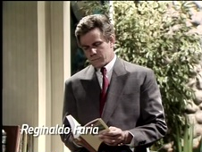
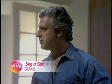

Vale Tudo
| reprisada de | 04/10/2010 a 14/07/2011 |
|---|---|
| em 204 capítulos | |
| frequência | segunda-feira a sexta-feira |
| faixa | meia-noite e quarenta e cinco |
| horário alternativo | seg a sex, ao meio-dia |
Obra atemporal escrita por Gilberto Braga, Leonor Bassères e Aguinaldo Silva, exibida pela primeira vez entre 1988 e 1989 às oito da noite, que debate o valor da honestidade no Brasil. A antagonista vende a humilde casa onde vive com a mãe, em Foz do Iguaçu, e com o dinheiro parte para o Rio de Janeiro, disposta a lançar mão de qualquer trapaça necessária para subir na vida. Vale Tudo inaugurou a faixa de novelas do Viva à 0h45, além de ser a primeira atração do gênero a contar com um horário alternativo na grade de programação, sempre ao meio-dia do dia seguinte (excluindo sábados e domingos, assim como no horário principal). À época, esse horário incumbiu-se da exibição de novelas tidas como medalhões.
Muito aguardada pelos entusiastas de teledramaturgia, a reprise de Vale Tudo foi confirmada em setembro de 2010, como parte das novidades na grade de programação do Viva. Por acordo com a Globo, que preparava um novo horário de novelas no entorno das onze horas da noite, a exibição de novelas no canal fechado não poderia se dar em horário concomitante ao da emissora aberta. Para, ainda assim, encaixar a novela na contagem de audiência do horário nobre da TV por assinatura - que vai até uma hora da manhã -, o horário estabelecido para Vale Tudo foi o de meia-noite e quarenta e cinco.
Até o capítulo de nº 7, a cartela de numeração de Vale Tudo foi omitida, tendo sido exibida a vinheta de "voltamos a apresentar" em seu lugar - ao contrário do que acontecera em 1988, quando a claquete foi incluída normalmente. A partir do capítulo de nº 8, esse ajuste foi abandonado na reprise, mantendo a originalidade do conteúdo.
A reprise de Vale Tudo fez enorme sucesso. Já em outubro de 2010, com o horário alternativo ao meio-dia, o Viva foi o líder no segmento de canais não-infantis, fechando o mês como o 9º canal mais assistido da TV por assinatura. No horário principal, de 8 meses em que esteve no ar (até junho de 2011), Vale Tudo foi líder por 7 (a exceção trata-se de março de 2011). O último capítulo foi líder de audiência entre os canais por assinatura, com público quase dobrado em relação ao segundo colocado. O público estimado da reapresentação foi de mais de seis milhões de assinantes; a repercussão também foi evidente nas redes: por diversas vezes, Vale Tudo figurou nos assuntos mais comentados do Twitter.
Ao longo de sua exibição no Viva, Vale Tudo angariou patrocínio dos anunciantes Seda, eHarmony, Laboratório Fleury (a+) e Nextel.
A novela que sucedeu a primeira reprise de Vale Tudo no Viva foi Roque Santeiro, confirmada oficialmente em abril de 2011. Sua principal "concorrente" na disputa pela vaga era Dancin' Days, preterida em razão de embaraço quanto aos direitos de uso de sua trilha sonora.
chamadas
A primeira chamada de Vale Tudo foi ao ar em setembro de 2010, mostrando personagens de atrações diversas exibidas pelo Viva em reações desconfiadas, afinal, "anos depois, essa pergunta ainda intriga muita gente: quem matou Odete Roitman?".
"Por status, dinheiro, poder e sucesso... Vale Tudo. (...) Um clássico de Gilberto Braga, de volta no Viva."
Vale Tudo foi a primeira novela a ganhar uma chamada de elenco para a promoção de sua exibição no Viva, embalada pelo seu tema de abertura.
- 
Já estreada, Vale Tudo passou a ser anunciada com uma chamada sem locução, focada na trajetória da personagem Maria de Fátima, interpretada por Glória Pires.
"Agora é pra valer: ela está chegando mesmo!", notificava a chamada para os capítulos marcados pela chegada de Odete Roitman à trama.
Uma chamada em particular destacava a presença de um horário alternativo para acompanhar a novela: "de segunda a sexta, meio-dia, vale frango, maionese, atum e ricota! E meia-noite e quarenta e cinco, vale caviar, lagosta, foie gras e crème brûlée. Para quem é do dia, ou da noite, vale tudo para não perder esse sucesso!"
Em janeiro de 2011, a divulgação era através de palavras-chave alusivas à história da novela.
Em fevereiro de 2011, os contrastes morais fundamentavam a promoção da trama: "um Brasil que trabalha... outro, que trapaça; pessoas traídas... e manipuladoras. Não há limites para alcançar o poder, em Vale Tudo."
"No vale tudo, as normas são claras: não é permitido golpe baixo intencional; não é permitido golpes com o intuito de cegar o adversário; não é permitido acertar golpes na nuca e nas costas. Mas, aqui no Viva, não há regras... em Vale Tudo."
Em junho de 2011, Vale Tudo entrou em sua reta final.
- 
"Os dias de Odete Roitman estão contados: nesta quarta, meia-noite e quarenta e cinco, em Vale Tudo" dizia a chamada para o capítulo nº 193, reprisado em 29 de junho de 2011.